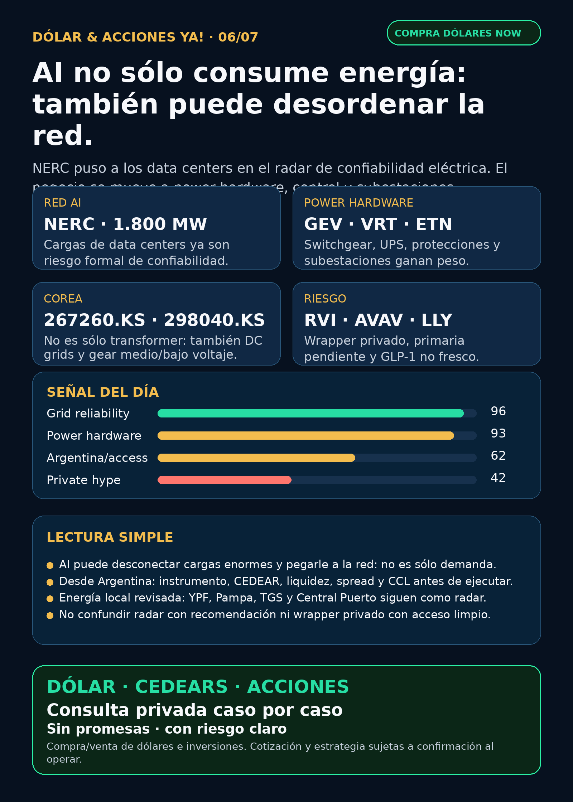

AI ya puede desordenar la red.
NERC puso los data centers en el mapa de confiabilidad eléctrica: power hardware, control, subestaciones y acceso real desde Argentina.
Texto WhatsApp
Placa del día

Dólar & Acciones YA — 06/07
Lectura simple del día
La señal fuerte de hoy no es “otra acción de AI”. Es algo más básico y más peligroso: los data centers de AI ya aparecen como problema formal para la confiabilidad de la red eléctrica.
En criollo: un data center puede proteger sus servidores desconectando carga en milisegundos. Eso salva equipos, pero puede pegarle a la red como si desapareciera una ciudad entera de consumo de golpe. NERC documentó eventos de reducción súbita de carga en data centers, incluyendo uno de 1.800 MW, y emitió acciones Level 3 para cargas computacionales.
Esto mueve el radar desde “comprar chips” hacia el stack físico: modelado eléctrico, UPS ride-through, protección/control, switchgear, subestaciones, transformadores, generación firme, storage, cooling e interconexión.
Para Argentina, la traducción es clave: una empresa puede ser buen radar global y aun así no ser buen instrumento local. Antes de ejecutar hay que chequear CEDEAR/acción/ETF, liquidez, spread, comisiones, CCL/MEP y precio vivo del broker.
Contexto dólar usado sólo como referencia educativa, no precio operativo de broker: BlueLytics a las 08:45 AR mostró oficial vendedor ARS 1.507 y blue vendedor ARS 1.515. CriptoYa a las 08:45 AR mostró USDT cripto ask cerca de ARS 1.565; MEP/CCL AL30 seguían con timestamp de cierre 03/07 18:00, así que no los trato como intradiarios vivos.
Tesis central
AI no sólo consume energía: también puede desordenar la red. Si la carga computacional entra y sale demasiado rápido, la oportunidad no queda sólo en utilities o generación. Aparecen negocios y riesgos en ingeniería eléctrica fina: medición, estudios, protecciones, UPS, commissioning, power quality, switchgear y control.
Ordenado por valor educativo/de radar, no por recomendación de compra.
Señales educativas del día — no ranking de compra
1) NERC — la AI pasa de “demanda eléctrica” a riesgo de confiabilidad
- Señal: NERC 2026 State of Reliability documenta eventos de Customer-Initiated Load Reduction en data centers: uno de 1.800 MW, otro de 428 MW y eventos de 227/540/1.300 MW. Además emitió Level 3 Essential Actions para computational loads: modelado, estudios, instrumentación, commissioning, operación, protección y control.
- Fuentes: https://www.nerc.com/globalassets/programs/rapa/pa/nerc_sor_2026_overview.pdf y https://www.nerc.com/globalassets/programs/bpsa/alerts/level-3-computational-load-alert.pdf
- Lectura en criollo: la AI no sólo pide más electricidad; puede generar shocks si las cargas se desconectan mal. Eso convierte a power equipment y grid engineering en parte central de la tesis.
- Proxies globales a estudiar:
GEV,VRT,MOD,ETN,PWR,HUBB,VST,CEG,NEE,D. - Accionable local Argentina: depende de CEDEAR/ETF/broker global, liquidez, spread y CCL vivo. No asumir ejecución fácil.
- Estado: señal fortalecida / sube riesgo operativo.
2) Corea power equipment — el cuello no es sólo transformador grande
- Señal: Korea Economic Daily publicó que fabricantes coreanos de power equipment están empujando medium/low-voltage gear y DC grids, no sólo ultra-high-voltage transformers. Korea JoongAng Daily ya había verificado un contrato de HD Hyundai Electric por ~USD 721 millones para switchgear/power equipment de data center en Norteamérica.
- Fuentes: https://www.kedglobal.com/energy/newsView/ked202607020007 y https://www.koreajoongangdaily.com/business/hd-hyundai-electric-seals-721-million-deal-with-big-tech-to-power-north-america-data-center/12751608
- Lectura: el segundo peaje de AI incluye breakers, switchgear, subestaciones, DC grids y arquitectura eléctrica completa. Sin esos equipos, el data center no escala.
- Instrumentos globales: HD Hyundai Electric (
267260.KS), Hyosung Heavy Industries (298040.KS), LS Electric; comparables/proxies globalesGEV, Hitachi/Hitachi Energy (6501.T/HTHIY) y Siemens Energy (ENR.DE, no confundir con Siemens AG). - Argentina: Corea/OTC no se presume accesible desde IOL/PPI. Si no hay instrumento claro, queda como radar educativo o proxy vía empresas globales.
- Estado: fortalece tesis.
3) GE Vernova / gas bridge / nuclear — power now, nuclear later
- Señal: POWER Magazine reportó el modelo Blue Energy / GE Vernova / Crusoe en Port of Victoria, Texas: colaboración de 2,5 GW, FID esperado 2027, dos turbinas GE Vernova 7HA.02 para ~1 GW desde 2030 y hasta cinco BWRX-300 para ~1,5 GW nuclear desde 2032.
- Fuente: https://www.powermag.com/blue-energy-ge-vernova-advance-gas-bridge-model-to-unlock-nuclear-finance/
- Lectura: si los hyperscalers necesitan energía firme rápida, puede aparecer un modelo puente: gas ahora para destrabar data centers y nuclear/SMR después. Oportunidad grande, pero con riesgo de permisos, capex, FID, calendario y sobrecostos.
- Instrumentos/proxies:
GEV,GE,BE,OKLO,CVX,MSFT. No todo captura revenue directo. - Argentina: acceso/CEDEAR/liquidez pendiente antes de cualquier ejecución.
- Estado: fortalece tesis estructural / vigilar ejecución.
4) Tesla — dato real de entregas y storage, no sólo robotaxi
- Señal: Tesla informó vía SEC 8-K EX-99.1 que en Q2 2026 produjo 451.758 vehículos, entregó 480.126 y desplegó 13,5 GWh de storage. Earnings completos: 22/07/2026.
- Fuente: https://www.sec.gov/Archives/edgar/data/1318605/000162828026046717/exhibit99111111.htm
- Lectura:
TSLAsigue mezclando autos, energía, autonomía y narrativa. El dato verificable hoy es entregas/storage; no convierto eso en tesis robotaxi sin margen, cash flow, regulación y earnings. - Accionable local Argentina: revisar CEDEAR, spread, CCL y precio vivo si se analiza ejecución.
- Estado: vigilar / señal mixta.
5) Cameco / Cigar Lake — nuclear también tiene riesgo físico
- Señal: Cameco reportó por SEC 6-K EX-99.1 la suspensión temporal de Cigar Lake por problemas en la planta de ácido sulfúrico de Orano McClean Lake. Espera reinicio en unas dos semanas y sin impacto en outlook si no se extiende.
- Fuente: https://www.sec.gov/Archives/edgar/data/1009001/000119312526293855/d21040dex991.htm
- Lectura: nuclear/uranio puede beneficiarse de AI power, pero el supply físico no es mágico. También hay interrupciones operativas.
- Instrumento: Cameco (
CCJ). - Estado: vigilar / riesgo operacional.
6) Defensa / counter-UAS — AVAV en radar, pero primaria pendiente
- Señal: DefenseScoop reportó contrato Pentagon/Army de USD 500 millones para AeroVironment en commercial counter-drone technology. La fuente primaria War.gov/Contracts quedó bloqueada en la corrida.
- Fuente secundaria: https://defensescoop.com/2026/07/02/pentagon-awards-500m-contract-aerovironment-counter-drone-technology/
- Lectura: defensa física — drones, counter-UAS, municiones, motores, directed energy — sigue como carril real. Pero sin primaria accesible no lo cierro como claim confirmado.
- Instrumentos:
AVAVy canastasITA/XARcomo radar educativo. Riesgos: integración BlueHalo, material weaknesses, contratos, valuación y beta alta. - Estado: vigilar / auditar primaria DOD o AVAV IR.
7) Pharma / GLP-1 oral — Lilly sí, pero no es noticia fresca de julio
- Señal: openFDA/Drugs@FDA muestra Foundayo/orforglipron de Eli Lilly (
LLY) aprobado bajo NDA220934 con fecha 2026-04-01. Titulares recientes son recirculación, no aprobación nueva 24–72h. - Fuente: https://api.fda.gov/drug/drugsfda.json?search=application_number:%22NDA220934%22&limit=1
- Lectura: GLP-1 oral sigue siendo tesis estructural potente para
LLYy presión competitiva sobreNVO, pero no hay que venderlo como catalyst fresco. - Estado: fortalece tesis estructural / no novedad fresca.
Watchlist base — seguimiento rápido
- RKLB: sin filing nuevo posterior al 8-K de adquisición de Iridium ya indexado. Tesis space/comms fortalecida, con riesgo de deuda, approvals, integración y ejecución hasta mid-2027.
- NVDA: 8-K del 02/07: Ajay Puri se retira de EVP Worldwide Field Operations y Nicholas Parker pasa a EVP. Señal de go-to-market, no catalyst financiero.
- PLTR: filings menores; sin señal operativa nueva fuerte.
- TSM: 6-K por cambio de treasurer; sin señal operacional nueva. Moat foundry vigente.
- MU: sin novedad operacional posterior al Q3/HBM ya indexado.
- GOOGL/GOOG: TPU/cloud/distribución siguen estructurales; sin fuente nueva fuerte en esta corrida.
- AAPL: revisada sin señal nueva fuerte; no vender como AI moat sin producto/monetización verificable.
- HOOD: Robinhood Chain, Stock Tokens y Agentic Accounts siguen como caso educativo de crypto gobernado + AI trading agents con controles humanos.
- TSLA: entregas/storage Q2 verificados por SEC; vigilar earnings 22/07.
- ASML: EUV/High-NA vigente; sin catalyst nuevo 24–72h.
ASML sí / all-in no. - Gold / GLD / GOLD / B: instrumento ambiguo. No publico tesis/precio hasta confirmar si se habla de ETF, minera, oro físico u otro.
- RVI: Form 4 del 01/07 muestra ventas adicionales de Robinhood Markets y quedan 13.345.669 shares. Debilita confianza/sube vigilancia; no actualiza NAV.
- CBRS: sin señal operacional nueva posterior a OpenAI/AWS/Q1. Mantener riesgos: customer concentration, capex, TSMC dependencia, lockups/valuation.
Portfolio/base Mi Simulación
La cartera de Ricardo fue liquidada, devuelta y terminada según corrección de Charly del 24/06. No hay posiciones activas ni P&L real para reportar. Este radar opera como vigilancia para próxima decisión humana o nuevo inversor.
Energía y capa Argentina
- Tesis central: AI power ahora incluye red confiable, modelado de cargas, switchgear, transformadores, subestaciones, generación firme, nuclear/gas, storage, cooling y permisos.
- Energéticas argentinas:
YPF,PAMP,TGS,CEPUrevisadas; no apareció señal primaria nueva superior. Siguen como radar educativo local por Vaca Muerta, gas, generación, tarifas, infraestructura y riesgo regulatorio. - En criollo: una utility puede ganar por demanda eléctrica, pero también tiene deuda, capex, regulación, permisos, tarifas y riesgo político.
- Antes de ejecutar desde Argentina: chequear MEP/CCL, spread, volumen, comisiones, ratio CEDEAR si existe, parking/liquidación y si el ticker opera realmente en el broker.
Pharma / salud
- LLY / GLP-1 oral: tesis estructural vigente; aprobación real de abril, no novedad fresca.
- NVO / Wegovy oral: sin catalyst nuevo superior en esta corrida; seguir precio, cobertura, competencia y approvals.
- AZN / PFE / MRK / AMGN / REGN: revisadas; sin señal clínica/regulatoria nueva fuerte que supere el carril energía/grid.
Defensa, space y physical AI
- Defensa/guerra física:
AVAV,GE,RTX,LMT,NOC,GD,HWM,KTOS,BA,ITA/XARrevisados. AVAV tiene señal secundaria fuerte; falta primaria DOD/War.gov o AVAV IR para cerrar. - Space/orbital AI:
RKLBySPCXrevisados. SpaceX/SPCX sigue radar alto, pero no accionable automáticamente sin precio vivo, float, liquidez, broker/acceso Argentina/US y lectura de riesgo. - Autonomous mobility / physical AI:
TSLAtuvo entregas/storage verificadas; Waymo/Alphabet, Zoox/Amazon, Uber y Joby revisados sin señal primaria nueva fuerte. - Fintech / AI trading agents:
HOODsigue como caso educativo: agentes financieros con ledger, límites, paper/read-only, aprobación humana y disclaimers. Red flag si prometen autonomía y rentabilidad sin controles. - Crypto gobernado: sin token nuevo para elevar. El carril sigue como educación/infraestructura/rails regulados, no casino de tokens.
Red flags / hype para ignorar
- Comprar “AI power” sin mirar deuda, permisos, valuación, instrumento y liquidez.
- Confundir carga eléctrica de data centers con revenue automático para cualquier utility.
- Vender Corea/OTC como si fuera fácil desde Argentina sin broker, moneda, liquidez y spread.
- Presentar GE Vernova/gas bridge/SMR como revenue garantizado antes de FID, permisos y ejecución.
- Tratar stock tokens de HOOD como CEDEARs o acciones locales.
- Vender RVI/DXYZ como “comprar OpenAI/SpaceX limpio” sin NAV, premium/descuento, liquidez y acceso.
- Publicar Lilly/orforglipron como aprobación fresca de julio cuando FDA marca abril.
- Decir “contrato AVAV confirmado” sin primaria DOD/AVAV accesible.
- Hablar de Gold/GLD/GOLD/B sin instrumento exacto.
Qué mirar después
- NERC/PJM/ERCOT/FERC: más reglas sobre computational loads, ride-through, modelado y protecciones.
- Primarias de GE Vernova, Hitachi Energy, Siemens Energy, HD Hyundai Electric, Hyosung y LS Electric sobre orders/backlog de switchgear, transformers y subestaciones.
- National Grid/Joulent/Project Kilby, Bloom/Brookfield y otros modelos “bring your own power”.
- AVAV: conseguir DOD/War.gov o AVAV IR para cerrar el claim counter-UAS.
- RVI/DXYZ: NAV actualizado, premium/descuento, sponsor sales, liquidez y acceso Argentina/USA.
- Próximos catalysts: Tesla earnings 22/07, semis/memory, utilities y pharma/GLP-1.
Servicio privado
Dólar · CEDEARs · acciones · consulta privada. Si querés comprar o vender dólares, invertir en acciones o pensar una estrategia financiera más personalizada, escribime por privado y lo vemos caso por caso. Cotización sujeta a confirmación al momento de operar.
Disclaimer
Esto no es asesoramiento financiero personalizado ni una orden de compra/venta. Es research educativo para decisión humana, con fuentes verificables y riesgos explícitos.